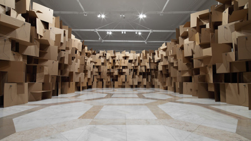
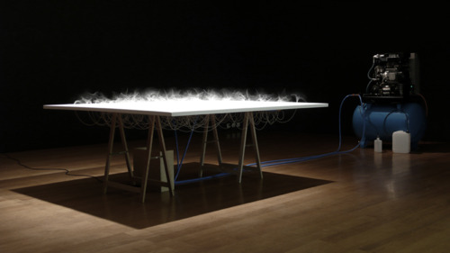

Artist: Zimoun
Unsurprisingly, I’m a big fan of Swiss sound artist Zimoun. His artistic vision is one of clarity, based on kinetic mechanisms that appear at first glance single-mindedly simple, yet once turned on give rise to surprisingly complex outcomes. His assemblages of primitive motors and analogue mechanisms produce unpredictable behaviors that appear almost organic, even though their construction is resolutely inorganic. The work is a nod equally to cybernetic theory and Minimalist sculpture, while continuing an ongoing tradition exploring sound as non-music.
But what makes Zimoun exceptional in my mind is his command of space as a physical parameter. This extends to all aspects of his (always site-specific) work: From placement and lighting to the staging of the mechanical elements. The visual presentation alone is so impeccable that looking at pictures of the work it is easy to forget that sound and kinetic behavior are the real goals of his practice.
Curating Zimoun for the “abstrakt Abstrakt” show for NODE10 was a pleasure. As it happens he is also a courteous professional. If asked to name an artist worthy of a massive commission for public art, Zimoun would be at the top of my list. His continued rise to art stardom ought to be a slam dunk.

